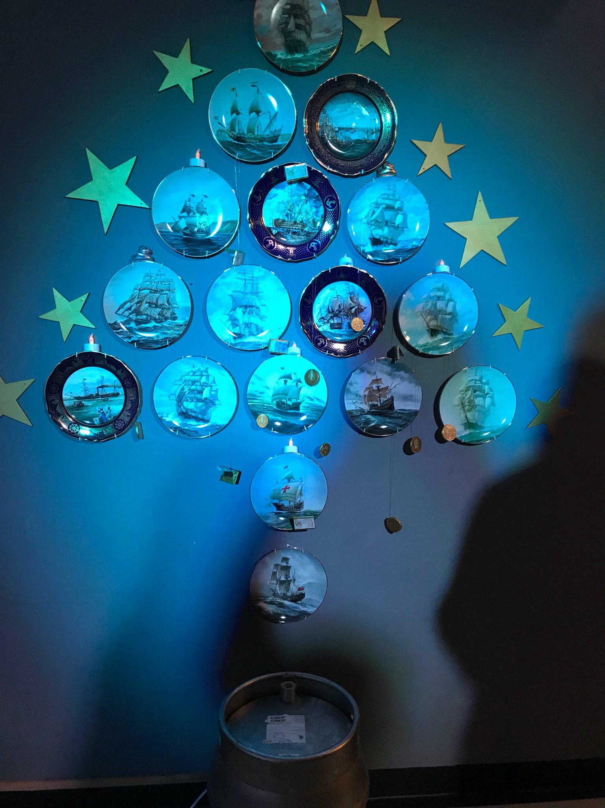
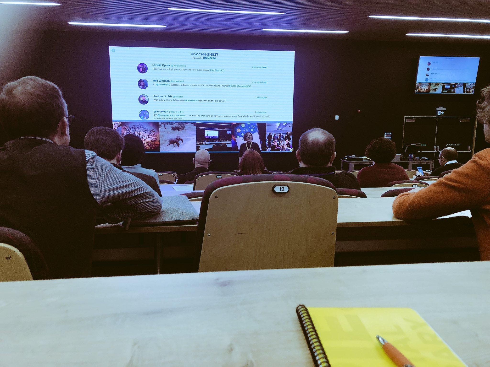
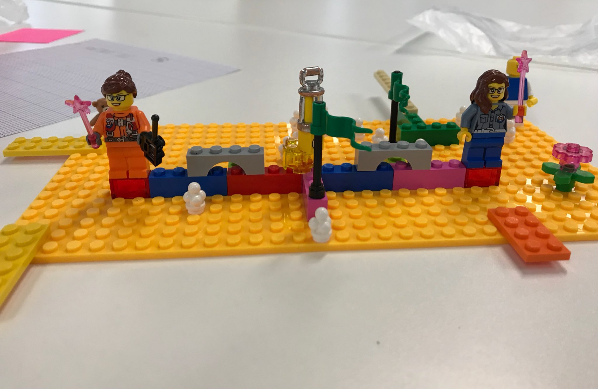
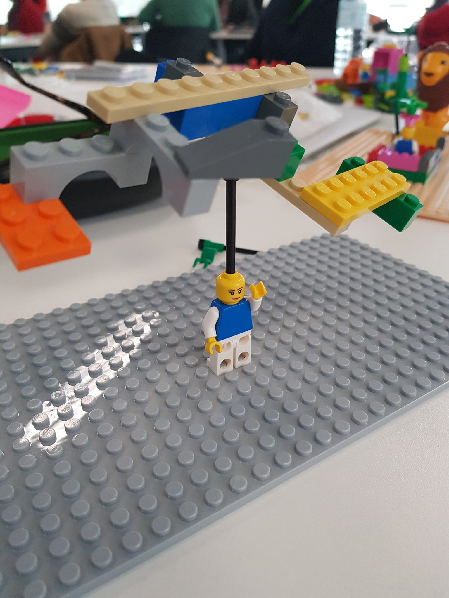
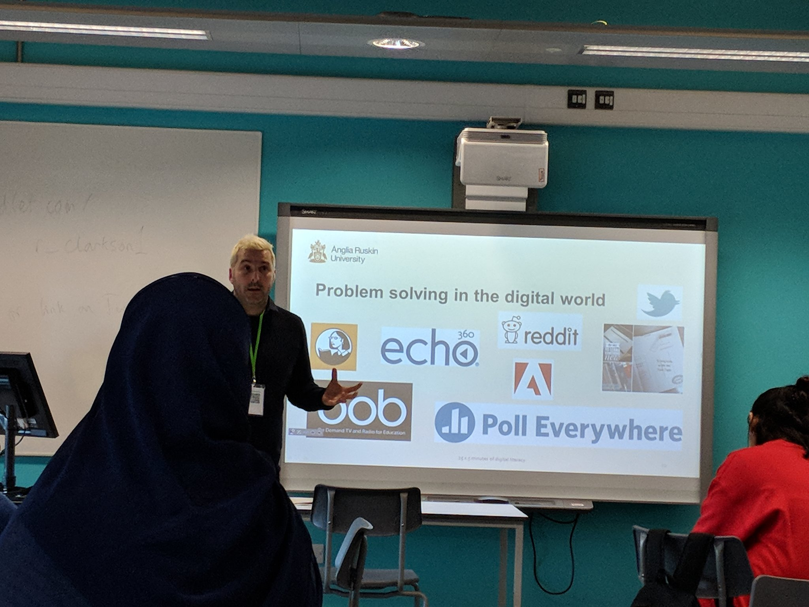
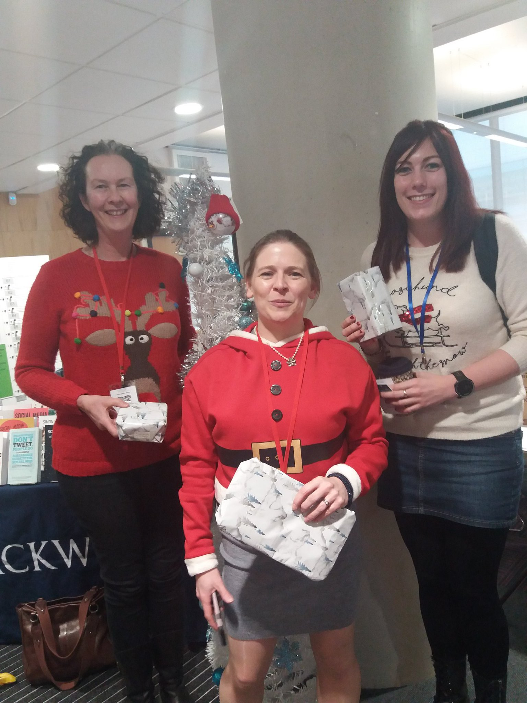
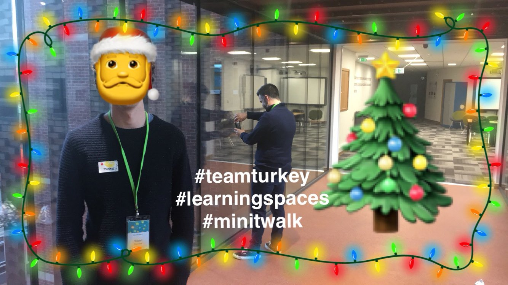

Edit
#SocMedHE17
Spying on the Third Social Media in Higher Education Conference, Sheffield Hallam University. Storified because I still can.
 Social Media for Learning in Higher Education ConferenceThis site supports the Social Media for Learning in Higher Education Conference
Social Media for Learning in Higher Education ConferenceThis site supports the Social Media for Learning in Higher Education Conference- Coming to #SocMedHE17? We've compiled a handy Twitter delegate list (see our lists). You're not there? don't fret - contrary to seminal (?) 90s Breakbeat duo: Kicks like a mule*, if your name's not down, you can actually still come in. book at http://go.shu.ac.uk/socmedhe *see youtube
- Still using my cup from last year #socmedhe17 do we get a new one this year? pic.twitter.com/wPt0EHTNw1
- So #SocMedHE17 doesn't fall on #ChristmasJumperDay BOOO! However, we're going to do it anyway - why on earth wouldn't we? this way you can get more sanctioned work use out of your jumper purchase. Prizes for best home adapted creations, and more for HE themed attire..
- Not sure what to expect from the #BYOC at #SocMedHE17? it's not Bring Your Own Cat (imagine the fun/hell), it's: Build Your Own Conference - our version of an EdCamp/Un-conference/Barcamp - check out this quick EdCamp introduction: https://www.youtube.com/watch?v=gr7teMAk-hA
- Great conversation with @SFaulknerPandO in advance of #SocMedHE17 - there will be fun and prizes if our BYOC idea gets participants votes!
- @andrewmid Really looking forward to this! #SocMedHE17
- We've now made a Tricider voting page for all ideas so far submitted for the #BYOC part of #SocMedHE17. Add further ones there now, comment & vote for those you'd like included in the BYOC. If attending on Tuesday, good to do this in advance :) http://www.tricider.com/brainstorming/3NFkjh2HGol
- We are running a #minitwalk during our workshop reflecting on walking, talking, tweeeting, learning as a #learningspace at #SocMedHE17 #twalk
- Check this out 19th Dec, when I present #socmedhe17 via webinar @dompates @james_waxmedium @CityUniLEaD @julievoce @KrisEdTech @colinloughlin #altc #LTHEchat >> https://twitter.com/andrewmid/status/941741504002969601
- My 2nd tweetchat on another facet of #learningspaces is @LTHEchat 100th tweetchat #LTHEchat 8-9pm Weds 20th... It's a #Christmas Special too! Blurb and Questions done! .... onto the #SocMedHE17 prep (Tuesday 19th) on #Twalk ! Isn't December supposed to a 'doss' month?! #altc pic.twitter.com/vOXv377fqS
- @SocMedHE SO many interesting topics - eventually managed to choose 4 and vote. I love the sound of #BYOC Im very #excited for Tuesday now! #SocMedHE17 #OTstudent
- Added my votes! Who's coming to #SocMedHE17?! Time to vote on the BYOC suggestions and time on the day to your own! https://twitter.com/SocMedHE/status/941722378891128833
- Which #BYOC topics are you interested in? Vote here: http://www.tricider.com/brainstorming/3NFkjh2HGol #SocMedHE17 pic.twitter.com/JB1PmGiYpT
- @SocMedHE Wait, what? You mean I can't bring my cat? She has a sad now. #SocMedHE17 pic.twitter.com/Z6xIdEOd8p
- One for our presentation on social medial in teacher ed #SocMedHE17 @alisoniredale @dianatremayne? https://twitter.com/YouHadOneJ0B/status/941993814364848128
- Looking forward to Social Media for Learning in HE #SocMedHE17
- Twalking as digital placemaking #twalk #socmedhe17 https://tactilelearning.wordpress.com/2017/12/16/twalking-as-digital-placemaking-twalk-socmedhe17/
- @suebecks Added mine too #SocMedHE17 can't wait!
- Nearly at the end of a great experience on the @LTHEchat organising team with @becksell2001 and @scottturneruon, steered by amazing @suebecks. Can't wait to meet f2f some of the #LTHEchat community at #SocMedHE17
- It has been fab, sorry I can't make it to #SocMedHE17 but hopefully we will meet at something else in the future. #LTHEchat https://twitter.com/jennylewinjones/status/942326422898708480
- Reflections on a #twalk by @jeffwaldock https://youtu.be/WyR1_Xg0AF8 via @YouTube #socmedhe17 this video is being added to our conference workshop toolkit
- Coming to #SocMedHE17 tomorrow? Essential checklist: devices & chargers (it'll be dynamic so don't overload yourself!); reliable QR reader; dust off padlet account & see what's new; bring open & enquiring mind; xmas jumper (entirely optional). Leave cat at home @NomadWarMachine pic.twitter.com/ltUaoyeVKP
- On my way to #SocMedHE17! Just the small matter of the train journey to go!!
- Take note #SocMedHE17 attendees Who's wearing a xmas jumper?! https://twitter.com/SocMedHE/status/942640956012195841
- Just undertaken clandestine handover of Bakewell puds for the #SocMedHE17 pre-conf dinner tonight, above & beyond call of duty by Richard at @RealBakewellPud! We shall toast you this evening! 1 place left - 1st come 1st served, just email socmedhe@shu.ac.uk pic.twitter.com/9SpMlU9LzF
- A reminder for delegates of #SocMedHE17 to visit http://www.tricider.com/brainstorming/3NFkjh2HGol and vote for the suggestions you want to see in the #BYOC, add further ones there now, or you can bring on the morning- we'll be moving quickly though so it's good to think about it now.. Please RT
- Sorry to miss #SocMedHE17 this year - it's one of the best events around https://twitter.com/socmedhe/status/942640956012195841
- If I had told my 21-year-old, online-diary-writing self that one day Id be preparing an academic presentation on tweeting, she wouldnt have believed me. #SocMedHE17
- Sad to be missing #SocMedHE17. Keep tweeting folks, please?
- Fancy some pre- conference fun? #SocMedHE17 We would like you to share an image, diagram, graphic or assemblage of a learning space that supports your learning. I'll start....@suebecks @andrewmid @egillaspy @EricStoller @horrocks_simon @santanuvasant @Chri5rowell @neilwithnell pic.twitter.com/7Xjy7WYdkR
- @suebecks @andrewmid @egillaspy @EricStoller @horrocks_simon @santanuvasant @Chri5rowell @neilwithnell A 5k run around Sefton Park in Liverpool. #SocMedHE17 Allows me the time and space to reflect on problems or consider them in different ways.
- Looking forward to talking about #twalking at #socmedhe17 https://blogs.shu.ac.uk/socmedhe/papers-at-socmedhe17/walk-this-way-reflections-on-a-twalk/ alongside these christmas crackers @andrewmid @santanuvasant @Chri5rowell @jeffwaldock #LIVUNISOCIAL
- yum! Always got room for mince pies! #SocMedHE17 https://twitter.com/Chri5rowell/status/942716064047206400
- @alexgspiers @andrewmid @egillaspy @EricStoller @horrocks_simon @santanuvasant @Chri5rowell @neilwithnell Learning spaces: Informal learning using my mobile phone to connect with my PLN (personal learning network) in Twitter. The weekly #LTHEchat is a fine example! #SocMedHE17 #alwayslearning pic.twitter.com/ImKMW249UY
- @alexgspiers @suebecks @andrewmid @egillaspy @EricStoller @santanuvasant @Chri5rowell @neilwithnell I genuinely do a lot of reflection/planning while I'm in the car - here's a live shot as I grab a quick coffee in beautiful Aberaeron as I begin my journey to #SocMedHE17 pic.twitter.com/IcuMAusdCh
- @alexgspiers @suebecks @andrewmid @egillaspy @EricStoller @horrocks_simon @santanuvasant @Chri5rowell Riding my bike allows me time to reflect and focus #SocMedHE17 pic.twitter.com/kOj4AWLdoh
- @alexgspiers @suebecks @andrewmid @egillaspy @EricStoller @horrocks_simon @santanuvasant @Chri5rowell Also a bit of #lsp does the trick #SocMedHE17 pic.twitter.com/kq7Zqt586a
- Christmas jumper , bag full of Lego for a session using Lego Serious Play with @suebecks #SocMedHE17 I'm on my way ! pic.twitter.com/QSbosSJw0b
- @alexgspiers @suebecks @andrewmid @egillaspy @EricStoller @santanuvasant @Chri5rowell @neilwithnell & not many spots better for 'reflection' en route to #SocMedHE17 than this - the stunning Bala Lake #nofilter pic.twitter.com/XcJ0eidz5V
- @alexgspiers @suebecks @andrewmid @EricStoller @horrocks_simon @santanuvasant @Chri5rowell @neilwithnell Here's me 'reflecting' with #coachingHE team at #sdfconf17 as I learn best when I'm around others. I learn so much watching my son explore the world with no boundaries too! #lsp #SocMedHE17 pic.twitter.com/3VxXYE4DdEhttps://t.co/3VxXYE4DdEpic.twitter.com/3VxXYE4DdE
- @neilwithnell @alexgspiers @suebecks @andrewmid @egillaspy @EricStoller @horrocks_simon @Chri5rowell Very appropriate given the topic of @LTHEchat 100 on Weds too! . For me, on a tube / train with my kindle in the morning and evening, helps me to switch off, focus, read and learn new things. #SocMedHE17 #altc pic.twitter.com/JzDLedu550
- My bags are packed and Im heading over to Sheffield for #SocMedHE17 tomorrow. pic.twitter.com/u7G2TcTuPO
- Excited to be attending #socmedhe17 tomorrow. Looking forward to seeing some interesting presentations and research! Good luck everyone. pic.twitter.com/UywsCD3O1t
- @alexgspiers @suebecks @andrewmid @egillaspy @EricStoller @horrocks_simon @santanuvasant @Chri5rowell @neilwithnell Its got to be our campus for me...! #SocMedHE17 pic.twitter.com/2kvqO7W25h
- Please come to my interactive workshop exploring social media and eprofessionalism! Last #PhD workshop this side of Christmas @SocMedHE #SocMedHE17 https://twitter.com/socmedhe/status/942748041026719744
- Ready for the train journey to Sheffield. My second favourite city in England #SocMedHE17 pic.twitter.com/p47hViIoEG
- @SocMedHE @NomadWarMachine On my way now to #SocMedHE17 - unfortunately no xmas jumpers or cats with me.
- On my way to #SocMedHE17 through the mid-afternoon sunset...
- I'm hoping people will join us for our #minitwalk #learningspaces activity tomorrow at 15:20 for half an hour. Wherever you are, join in with our #socmedhe17 conference workshop. Twalk plan is here: https://melsig.shu.ac.uk/melsig/
- Pre-conf gathering is almost upon us! Got your glad rags on? #SocMedHE17 @DorothyPax pic.twitter.com/3mB36r42cH
- Twas the night before #SocMedHE17 when all thro Charles Street Building. Not a creature was stirring, not even a tweet; The badges were all neatly laid out with care. In hopes that St. Nicholas soon would be there pic.twitter.com/2uzePlWCH9
- Yee ha! Nearly there, looking forward to the #SocMedHE17 pre-conference dinner @DorothyPax! pic.twitter.com/FVz4YSBFpR
- @alexgspiers @suebecks @egillaspy @EricStoller @horrocks_simon @santanuvasant @Chri5rowell @neilwithnell @VivienRolfe taking part in my instant studio-based learning activity. It may look like a room but its a studio... so we make and crit :-) #socmedhe17 pic.twitter.com/xQqHYi9ySD
- What about you @lizjburns ? Excited about our #coachingHE workshop at #SocMedHE17 tomorrow #toolkit http://bit.ly/2AUgMaY https://twitter.com/egillaspy/status/942751466674098176
- Me arriving in Sheffield...#SocMedHE17 pic.twitter.com/piDus8F3sY
- Will you start the fans please.... #SocMedHE17 TEF #crystalmaze tech edition with @neilwithnell :) http://bit.ly/2AVZTg3 pic.twitter.com/aJvLKUjyT3
- @hopkinsdavid Will miss you David, but expect a few tweets #SocMedHE17
- Headed to #SocMedHE17 early tomorrow. Just woe betide anyone who tries any of that mandatory fun imposition. https://davewebster.org/2017/12/15/putting-fun-in-its-place-workshop-at-social-media-in-higher-education-conference/
- finishing off a bit of work and then can focus on meeting up with all the tweeters, #lthechatters, #byod4lers tomorrow at the fabulous #SocMedHE17 conference pic.twitter.com/AItkTVXe7g
- Pre-conference dinner at The Dorothy Pax. #SocMedHE17 pic.twitter.com/oacNZXbTNZ
- @alexgspiers #SocMedHE17 have a fab time. My disorganisation and crazy run in to Christmas means I can't make it.
- Missing #SocMedHE17 this year. Hope I will get to meet my fellow #LTHEchat ters at another event in the future.
- #SocMedHE17 pre-conference dinner has begun... pic.twitter.com/Y4TnHPiHEY
- If youve ever been on a #Twalk add your thoughts about benefits, disciplinary possibilities, emerging issues, integration of social media to our discussion docs: https://goo.gl/j31pzk #socmedhe17
- @egillaspy One of my favourites - learning with Lego ! Not long now until our #coachingHE workshop at #SocMedHE17 tomorrow , looking forward to it ! pic.twitter.com/3i0UeZsVqK
- The #Twalk toolkit is ready in time for our workshop tomorrow - please let us know what else would improve it for you https://goo.gl/fLro59 #socmedhe17
- I wish we had time to show this in our #socmedhe17 session - we won't but @jeffwaldock is a co-presenter. https://twitter.com/andrewmid/status/942406346560897027
- Final prep for our presentation tomorrow. #socmedhe17 pic.twitter.com/Aprqyl4Xkp
- And the winners of the #SocMedHE17 Xmas quiz.... @DustinAcEd @SFaulknerPandO pic.twitter.com/hzlTFifb62
- Great networking at the pre conference dinner along with the annual quiz and amazing food at @DorothyPax #SocMedHE17 pic.twitter.com/CckydRiS3E
- Looking forward to joining #SocMedHE17 tomorrow! I will be posting here about the interesting debates on #socialmedia and higher education! #Sheffield, here I go! #HE #university
- @andrewmid @SocMedHE This #minitwalk looks fun! So looking forward to the range of learning opportunities at tomorrows #SocMedHE17
- And the winners of the #SocMedHE17 conf quiz..... was us! Go team Scotland and team USA pic.twitter.com/Nd5czPRBvg
- #SocMedHE17 fab dinner put on by our hosts @SocMedHE ! https://twitter.com/SFaulknerPandO/status/942871258831773696
- Anne is in Sheffield for #SocMedHE17, and spotted this very rare /Forkocactus spoonelliflora/. pic.twitter.com/zMfplCDfNw
- Celebrating winning #SocMedHe17 quiz @MercureSheff. Looking forward to some Lego Serious Play action tomorrow with @suebecks pic.twitter.com/749cFxIyAf
- I get the feeling I'm missing out by not being at #SocMedHE17 and it hasn't even started yet.
- Thanks to the @SocMedHE team for a hugely enjoyable evening. Good to meet old and new twitter friends in real life #SocMedHE17
- Let's find a way to include you! Follow the #SocMedHE17 hashtag and ping participants with questions! https://twitter.com/srowett/status/942887398094114822
- It was a great meal #SocMedHE17 https://twitter.com/DustinAcEd/status/942875212370137088
- @davidwebster Are you telling me you won't be coming in a Xmas jumper?.... #SocMedHE17
- We aim to live stream some of the sessions from #SocMedHE17 via our YouTube channel, find us and subscribe - all things being equal, there should be a steady stream from 1pm. More deets when we know it's working ok. :)
- @srowett Following each other might be a start. How else can we include you in #SocMedHE17 ?
- Gain Free Followers guaranteed! http://tinyurl.com/y94hegvc#?/msqfZWM1Dc204PwRYB7ztdbNG #ancdecides2017 #SocMedHE17 #Steelers @weezmgk @adrianisbasic
- Cant be at #SocMedHE17 today, but looking forward to following the hashtag and hearing about the latest social media teaching developments
- Looking forward to my day at #SocMedHE17 - up early and waiting for my first train
- Up early, but that's good as on my way to #SocMedHe17 pic.twitter.com/wYsy7D0oGT
- seconded (although it might prove expensive, sharing music recommendations and all...) #SocMedHE17 https://twitter.com/alexgspiers/status/942888489154174976
- @DrLancaster Would have been good to see you ;-( Will make sure there is plenty of tweeting! #SocMedHE17
- Student digital capability without digital criticality is an educational disservice...#socmedhe17 https://twitter.com/davidwebster/status/942822216198246402
- @SocMedHE This is where I may regret taking up the Christmas jumper challenge and light up necklace... #SocMedHE17
- Stalk the Twalk! Missing #socmedhe17 this year but thinking of stalking the twalking with @andrewmid at 15:20 pm Twalk plan https://melsig.shu.ac.uk/melsig/files/2017/12/SocMedHE-mini-twalk.pdf Twalking reflections https://blogs.shu.ac.uk/socmedhe/papers-at-socmedhe17/walk-this-way-reflections-on-a-twalk/ #minitwalk #Twalk pic.twitter.com/WBKdeiozRX
- #SocMedHE17 today! Follow the hashtag for tweets on Social Media for Learning in #highered More on the programme: https://blogs.shu.ac.uk/socmedhe/programme17/
- Follow @SocMedHE for further updates! #SocMedHE17
- Follow the live streamed sessions from 1pm on the @SocMedHE YouTube channel https://www.youtube.com/channel/UCSBwyWMOkmy7btXdiSxphCQ #SocMedHE17
- On train to #SocMedHE17 - for those at my session - you can access the padlet at https://padlet.com/dwebster11/SocMedHE17 - #SayNoToFun
- #twalk workshop in a bag on its way to #socmedhe17 - join us for half an hour at 15.20 pic.twitter.com/6AiL3jQ6Dk
- Pertinent to #SocMedHE17, something @nikirivers and I wrote about problems with thinking that 'students just want to have fun' https://davewebster.org/2017/08/25/saying-no-to-fun/
- Off to @SheffieldHallam today for #SocMedHE17 with trusty Brenda Banana to learn more about social media and education pic.twitter.com/BoN5RU1MgQ
- Off to Sheff for #SocMedHE17 -perfect excuse to mess about on Twitter all day :)
- The latest The Laura Hollinshead Daily! https://paper.li/ljhollinshead/1314171528?edition_id=a2aa1040-e48f-11e7-b911-0cc47a0d15fd Thanks to @CharlieJJDavis @pigironjoe @davecormier #china #socmedhe17
- On the way to @SocMedHE with coffee in hand, ready to learn and listen #SocMedHE17 pic.twitter.com/n0h6e6RyGN
- @lburdenmedia This looks very interesting, good luck! I shall keep an eye out for a link to slides and #SocMedHE17
- Am expecting #SocMedHE17 to be busy/trending today. Enjoyed being there to talk about #FinDeSicleTwitter a couple of years ago. Have a great day
- En route to my first #SocMedHE17 more #excited than Harry on his first day at Hogwarts looking forward to the debates and discussions!! https://blogs.shu.ac.uk/socmedhe/programme17/?doing_wp_cron=1513633934.6930921077728271484375 #socialmedia #highered #OTstudent #DissertationResearch pic.twitter.com/9awN70AGYO
- @andrewmid @suewatling Haha Stalk the Twalk, yes I am sure many tweeps will do this. A form of lurking learner ! #minitwalk #SocMedHE17
- Getting ready to head over to #SocMedHE17 and cannot wait to see everyone @SocMedHE
- On my way to #SocMedHE17. @teraknor and I are running a practical workshop on Facebook Live at 2.55pm https://twitter.com/suebecks/status/943018708552896512
- Crossing the Lancs/Yorks border for the #SocMedHE17 pic.twitter.com/5eRyLQaobI
- It is a beautiful morning in Sheffield ahead of a fun-packed #SocMedHE17 pic.twitter.com/oHRh4Ori8D
- @MsEmentor I like this! And have used twitter in both staff development and teaching contexts. Today at #SocMedHE17, I'll be exploring some of my concerns of encouraging my students into an ever-more-toxic, barely-regulated, wildland of Nazis, trolls and abusers...
- Excited that @ACESBandE students @Corran_SHU @JessPaddonSHU @abbybutler96 @Matty_Trueman @callum_rooney95 are all contributing to #SoCMedHE17 hosted at @sheffhallamuni
- @davidwebster Yep. The potential for something to go wrong with students on twitter is there ... BUT there's also the potential for them to learn how to use it safely and well. In my experience many aren't using it prior to the stuff they do with me. #SocMedHE17
- @andrewmid @santanuvasant @davidwebster Read @davidwebster's blog with interest but feel lack of digital confidence of digitally shy staff still barrier to embedding critical digital literacies need fun, creative activities to tempt them into digital waters https://davewebster.org/2017/12/15/putting-fun-in-its-place-workshop-at-social-media-in-higher-education-conference/ Have a good #SocMedHE17
- Got to see sunrise on the train this morning. Almost in Sheffield for #SocMedHE17
- On my way to #SocMedHE17 in Sheffield with @BenRAtkinson to discuss how we are enhancing student employability at Lincoln through a social media CV.
- Some of our tweets today will come from #SocMedHE17 in Sheffield and #minitwalk, as our @santanuvasant has a talk there, but will be virtually there in spirit. Follow the #minitwalk (mini Twitter Walk) from 15.20 for 30 mins @UEL_News to see more! #learningspaces #lssig
- @KaySocLearn Hope to catch you later :) #SocMedHE17
- @andrewmid @davidwebster @suebecks Valid points. I see you're on the #SocMedHE17 YouTube channel. Will check it out.
- Conference organiser of @SocMedHE, Helen Rodger, is ready and raring to go for #SocMedHE17 pic.twitter.com/U2DKKnez6L
- A full and creative day ahead at #SocMedHE17 pic.twitter.com/KyIUnVWbzc
- We'll be eagerly following events at #SocMedHE17. Always a great event!
- Christmas Jumpers are welcome at #SocMedHE17 Natalie has set the bar very high already! pic.twitter.com/Ev4vR9OG4I
- Im rocking my Santa jumper #SocMedHE17 (at least thats what Im telling myself) pic.twitter.com/P4x0fUGfdC
- Rob looks resplendent in his Christmas jumper #SocMedHE17 pic.twitter.com/yhidYTkNVV
- @emmfletcher Nice to meet you f2f #SocMedHE17
- Testing out Facebook Live at #SocMedHE17 https://m.facebook.com/story.php?story_fbid=1723708477680502&id=1715636238487726
- Are you getting your votes in for the Build Your Own Conference? #SocMedHE17 pic.twitter.com/pX4YpiRgCC
- Ready for BYOC? Starting in 15 minutes - see you in the Lecture Theatre at 09:30! https://blogs.shu.ac.uk/socmedhe/byoc/ #SocMedHE17
- #minitwalk #twalk #socmedhe17 badges made! If youre organising a #Twalk for teams have team badges destination numbers and roles (roles) pic.twitter.com/kb6ZrP2Ypp
- Don't forget to grab a drink and Danish pastry before we get going! Cloakroom and programmes available at the registration desk #SocMedHE17
- #SoCMedHE17 starts with the chance to build your own conference. Several offers of discussions and workshops and we can vote to define the program. I am going for non conventional social networks and building communities before enrolment. #education #socialmedia #SHU #Sheffield pic.twitter.com/h9YONVpS1H
- Very excited to have finally met @suebecks in person-Having known each other online for years! #SocMedHE17
- Delegates are assembling ready for #SocMedHE17 beginning in less than 10 minutes. pic.twitter.com/0LpLkoXF3H
- Welcome address is about to start in the Lecture Theatre! #BYOC #SocMedHE17
- Here goes....! #SocMedHE17 Sooo excited! pic.twitter.com/WvNuZxacUg
- Worked out that this hashtag #SocMedHE17 gets me on the big screen
- Today we are enjoying useful tips and information from #SocMedHE17
- #SocMedHE17 it's about to kick off. Very excited pic.twitter.com/jc0n5HnKpo
- Hello all! #socmedhe17
- And we are off off #SocMedHe17 pic.twitter.com/BC80iF8P1Y
- Looking forward to this #SocMedHE17 @SocMedHE
- Wondering a bit who is at/goes to #SocMedHE17? Ed developers? Learning technologists? Senior T&L people? Are there any subject-based academics?
- Looking forward to the BYOD bit of #SocMedHE17 - coming up next pic.twitter.com/pHTjdJkg7K
- It is all getting very sociable at #SocMedHE17 pic.twitter.com/kOGbxGgNqC
- First time at #SocMedHE17 Already had some amazing conversations! #phdchat pic.twitter.com/MFvxYsm1eE
- Pleased to be presenting later at #socmedhe17
- @alyjbrown Hello back #SocMedHE17
- Looking forward to learning new things and getting social today @SocMedHE #SocMedHE17 pic.twitter.com/1Ndoniq494
- really looking forward to the 3rd (& my 3rd) @SocMedHE - great conference with lovely people doing interesting stuff #SocMedHE17 pic.twitter.com/AIXsNE2671
- @MsEmentor Im a pharmacist working in academia and practice (and doing a PhD!) #SocMedHE17
- @MsEmentor Yes, subject-based academics are here too! #SocMedHE17
- Looking forward to first experience with build your own conference at #socmedhe17
- #SocMedHE17 starts with intros from the amazing @HelenRodgerSHU and @DrAlisonPurvis pic.twitter.com/Rz7siIUoBA
- So, actually made it to #SocMedHE17 - glad to see cursed Xmas jumper plague appears to have been contained; anticipate further purge as day unfolds... pic.twitter.com/EksYQ2TDDO
- Excited to see what the bring your own conference BYOC elements of #SocMedHE17 will bring today
- First time at #SocMedHE17 -lots of energy and chat. Looking forward to opportunities for shared practice and learning new info. pic.twitter.com/l28JgrMq9H
- @abigailmcalpine Whats your PhD research? Im also here doing some data collection for my PhD! #SocMedHE17
- Third time at #SocMedHE17 @SocMedHE17
- @srowett @NomadWarMachine Thanks @srowett! We'll be tweeting all the action during the day too!#SocMedHE17
- Looking forward to connecting with other critical digital educators today :) #SocMedHE17
- @katiemaclure @ProfDerekS @BrianAddison75 @SarahPedersen2 @RGUresearch @RGUpharmacy Wish you were all here too....awesome conference! #SocMedHE17
- @abigailmcalpine Eprofessionalism as a healthcare professional (pharmacy focus for this bit!) and social media! Would love to know what youre up to! #SocMedHE17
- Love this massive screen at @sheffhallamuni here at @SocMedHE #socmedhe17 pic.twitter.com/IDh3Txk1OX
- @MsEmentor All of the above! #SocMedHE17
- @lburdenmedia Were looking forward to hearing all your presentations at #SocMedHE17 pic.twitter.com/VNRPu7FpXS
- @SocMedHE excited to be here #SocMedHE17
- So excited for my first BYOC today at #SocMedHE17 !! Cant wait to learn a lot! pic.twitter.com/vNMZW809If
- Live tweets on the screen #SocMedHE17 pic.twitter.com/OlQXk1lnIE
- #TuesdayThoughts HMS Queen Elizabeth Toys R Us #TuesdayBookBlog Matt Damon #BigSing David Marquand West Yorkshire Police #SocMedHE17 #BBL07 2017/12/19 09:38 GMT #trndnl http://www.trendinalia.com/twitter-trending-topics/unitedkingdom/unitedkingdom-today.html
- Team west of Scotland ready to rock #SocMedHE17 pic.twitter.com/oLpQOUoRQW
- Look Mom - Im on the big screen! #SocMedHE17
- Welcome to all visitors today at #SocMedHE17 , looking forward to meeting as many of you as possible today, especially those with an interest in online student communities
- Dont forget to tweet the gems for folks like me who cant be with you at #SocMedHE17
- Today Im at the Social Media in Higher Education conference at @sheffhallamuni. Follow #socmedhe17 - itll be covered extensively online. Obviously. pic.twitter.com/H67BH4aLzm
- Name badge doubles as the program (especially pleased with the 2:40pm session ) #SoCMedHE17 pic.twitter.com/LZI0CydAO6
- Holidays are coming, holidays are coming, holidays are coming, always #SocMedHE17
- Excited for the BYOC about to kick off at #socmedhe17 Team Scotland go strong!
- Workshop is about an hour, so plenty of time for some more BYOC activities after! #SocMedHE17
- After a warm welcome to #SocMedHE17 looking forward to experiencing build your own conference (BYOC) @SocMedHE pic.twitter.com/TL8OPGYW7K
- Stuck at home with but tuning into #SocMedHE17 via twitter!
- At the #SocMedHE17 conference. Looking forward to all the dank memes.
- We are here at #SoCMedHE17 Looking forward to the day ahead!
- Ah wish I was there! #socmedhe17 https://twitter.com/AnneOsterrieder/status/943054296521854976
- Check out our project The 7 Series for the BYOC #SocMedHE17 #shuSMASH
- Sheffield boys on tour (just down the road....) @Andy_Tattersall @tompjolley #SocMedHE17 pic.twitter.com/HypVIyhv19
- @DrAlisonPurvis Ill leave polyester joy as a niche I can live without occupying... #SocMedHe17
- BYOC is about to begin! This is a really interesting way to plan the start of a conference! #shuSMASH #SocMedHE17 pic.twitter.com/rt4gk0DFhA
- @cpjobling Will try! Might be too exciting though ;) #SocMedHE17
- Ever done a BYOC? Its happening now at #SocMedHE17 Interesting concept! Lets see how it goes.
- Voting complete! Build your own conference now being shaped by @HelenRodgerSHU #SocMedHE17 pic.twitter.com/TlOQijJNYW
- So now we are building our own conference#byoc #socmedhe17 pic.twitter.com/L7cSlVAqBj
- Starting to build the conference #SoCMedHE17 pic.twitter.com/8nyjUd9fVs
- Want to run a Bring Your Own Conference? Here's how... #SocMedHE17 pic.twitter.com/g8QqA0BYO7
- Track side betting to Build Your Own Conference at #SocMedHE17 pic.twitter.com/uFb0yVA2tJ
- We have @ecoffeeofficial cups ready for your next caffeine hit during #BYOC! #SocMedHE17 pic.twitter.com/qaIipB49cw
- The #SocMedHE17 discussion wall is about to take shape! Love the Build Your Own Conference setup pic.twitter.com/UXGzsxX2Jz
- #SocMedHE17 begins with BYOC (Build Your Own Conference). Looking forward to some interesting discussions on social media platforms and digital tools. Always nice to hear what others are using in their teaching and learning support!
- Watching the live draw for the 2026 World Cup #SocMedHE17 pic.twitter.com/g7aJHrrJLg
- Love the conference cups! Even more exciting than last year! #SocMedHE17 pic.twitter.com/iSmmTkDrGB
- Too much choice! All sessions at Byoc sound great #SocMedHE17
- Bring your own conference developing at #SocMedHE17 pic.twitter.com/BjNsVzuKlC
- The BYOC is taking shape... #SocMedHE17 pic.twitter.com/OEk1genVDy
- At the Social Media Use in Higher Education conference at SHU - looking forward to listening to how social media can aid post-PhD employability #SocMedHE17 pic.twitter.com/2gKf4OuMzf
- And as build your own conf gets underway, my session is allocated: where independent learning really takes place - 10am in the Largish primary teaching room #socmedhe17 @SocMedHE pic.twitter.com/VV4X1YmJjU
- Is anyone sitting in the front row? #SocMedHE17
- Bring Your Own Conference underway - all sounds great. Someone tell me which sessions to choose! #indecisive #SocMedHE17
- Damn. I forgot I'll be missing out on the #SocMedHE17 cups again! Good job last years' is still working :-)
- @alexgspiers Looks like the 1st three rows are empty #SocMedHE17
- watching a conference being built before our very eyes #SocMedHE17 pic.twitter.com/NBk41iGrZg
- #SocMedHE17 the conference morning has now been built! pic.twitter.com/3v34P0ewhO
- @SocMedHE Unfortunately we can't be at #SocMedHE17 today, but we'll be following closely on here...
- @alexgspiers aww enjoy Alex - keep the tweets coming ! I had such a fab time last year with my lovely pal the fabulous @suebecks ... gutted can't be there this year so will follow keenly on twitter ! Looking forward to seeing if there are festive jumpers a-happening this year ! #SocMedHE17 pic.twitter.com/lqpS8TqJHq
- @UniWestScotland Excellent, great to have you with us! #SocMedHE17
- Free bamboo cup from #SocMedHE17 *Gushes over how nice that is!* Cant believe its the last year its running. pic.twitter.com/9EZKwfPaGV
- Toughest decision of the day: which cup to pick #SoCMedHE17 pic.twitter.com/f7yVoLdaFr
- @alisoniredale I am absolutely loving that !! #SoCMedHE17
- The schedule of our BYOC this morning - fresh from the oven - done just several minutes before the conference kicked off! So different yet so exciting! #SocMedHE17 pic.twitter.com/VAwJnxhQqn
- Lego Workshop in room 12.2.11 at 11am #SocMedHE17 pic.twitter.com/H0Md1uIZJ8
- @hopkinsdavid <waves from Swansea> sadly I left mine there last year ... and I see they have some rather snazzy PINK ones this year that I will be missing out on ... sobs ... #SoCMedHE17
- Workshop on SoMe guidelines with@alybrown in room 12.2.10 at 11am #SocMedHE17 pic.twitter.com/ffeYG9IaCl
- Lurking online and hoping to pick up some tips from @SocMedHE #socmedhe17
- Lots of people (more than anticipated?!) interested in looking at the evidence for using social media to 'make a difference' #SocMedHE17 pic.twitter.com/dAn7H1HjEE
- Managing the overload, discussion in room 12.2.05 at 11am with Kat Munn #SocMedHE17 pic.twitter.com/sqc76C3t2k
- #SocMedHE17 what next for the conference? In room 12.2.18 at 11am pic.twitter.com/PuUQVVC0RK
- #SocMedHE17 conference in full swing - delegates have just built their own conference! Follow the hashtag for all the latest updates during the day. https://twitter.com/dorotheawina/status/943061246240329728
- Here's the link to the Padlet for this discussion #SocMedHe17 https://padlet.com/socmedhe/t0429e8ajqju pic.twitter.com/X5zIWl5gM4
- #SocMedHE17 Students @abbybutler96 @callum_rooney95 @Corran_SHU @JessPaddonSHU smashing their BYOC session. Full room! pic.twitter.com/N4jneA3l4vhttps://t.co/N4jneA3l4vpic.twitter.com/N4jneA3l4vhttps://t.co/N4jneA3l4vpic.twitter.com/N4jneA3l4v
- Thank you @scottturneruon for stepping in and providing us with a nice and gentle introduction go #RaspberryPi #SoCMedHE17 I am curious to explore it further!
- Fascinating discussions about the Seven ways to use social media cards created by the SMASH team #SocMedHE17 @abbybutler96 @Matty_Trueman @callum_rooney95 @Corran_SHU @JessPaddonSHU pic.twitter.com/ujoN4om2sH
- Always great to see #SocialMedia learning in education training. Schools must do much more to engage students and also upskill their teachers. https://www.teachertoolkit.co.uk/category/social-media-2/ #SocMedHE17
- Really interesting discussion on social media tools used for student engagement #shuSMASH, particularly given incoming GDPR regulation. @SocMedHE #SocMedHE17. pic.twitter.com/KN3wVNUB2o
- @suebecks @abbybutler96 @Matty_Trueman @callum_rooney95 @Corran_SHU @JessPaddonSHU I like this Sue, will these resources be shared via the #SocMedHE17 hashtag or somewhere (creative commons attributed etc?)... would like to see how useful they would be to @UEL_News staff.
- The face says it all.... #SocMedHE17 pic.twitter.com/wO067evS2U
- Seven ways to use Trello for group projects #SocMedHE17 created by @abbybutler96 @Matty_Trueman @callum_rooney95 @Corran_SHU @JessPaddonSHU pic.twitter.com/lehVUh8Vet
- Which idiot is posting Hawkwind links to the Padlet in this #SocMedHE17 discussion? Oh wait, https://www.instagram.com/p/Bc4XR9GjCU2/
- wonderful example of partnership working with students - these cards have been produced by @sheffhallamuni students to help staff understand potential uses of social media #SocMedHE17 pic.twitter.com/QeXQytjZQk
- Excellent to hear from students about their use of social media for learning and collaborating. Fantastic work #shuSMASH #SocMedHe17 pic.twitter.com/7YeArsyqBk
- #SocMedHE17 virtual introduction time. Say hello @teraknor and @papageorgiadis. You both use Facebook Live.
- @santanuvasant @suebecks @abbybutler96 @Matty_Trueman @callum_rooney95 @Corran_SHU @JessPaddonSHU @UEL_News Yes, we'll be sharing resources. Keep following #SocMedHE17 for more details in the new year!
- Getting too involved in the discussions at #SocMedHE17 that I'm forgetting to tweet about them!
- Thank you to everyone who attended the SMASH discussion...Hope you all enjoyed it! #SocMedHE17 #shuSMASH pic.twitter.com/WanzEqIbuc
- #SocMedHE17 ideas for engagement.. Lots of interesting ideas pic.twitter.com/aVTi68y6AY
- @SocMedHE @santanuvasant @suebecks @abbybutler96 @callum_rooney95 @Corran_SHU @JessPaddonSHU @UEL_News Use the hashtag #shuSMASH if you have any feedback or questions #SocMedHE17
- Oops I had written the wrong hashtag... it is really #socmedhe17 @MartinaEmke #socialmedia #highered https://twitter.com/MartinaEmke/status/943056017037975552
- Talking about shuUNI4U this morning at #SocMedHE17. pic.twitter.com/i1TJI10Urs
- @horrocks_simon @sheffhallamuni @Corran_SHU @JessPaddonSHU Hoping they are #creativecommons licenced so we can remix and reuse #SocMedHE17
- If anyone would like to look at the Seven Ways cards well be at the conference all day. Just ask...Each member has a pack! #SocMedHE17 #shuSMASH pic.twitter.com/FVtlbnEBzp
- @Matty_Trueman @SocMedHE @suebecks @abbybutler96 @callum_rooney95 @Corran_SHU @JessPaddonSHU @UEL_News #shuSMASH How much has this been used with staff and students? #SocMedHE17
- This is how our discussion looks like on #SocMedHE17: ideas coming from all directions!! #ShowAndTell #RaspberryPi #AppSwap Suggested apps so far: Kahoot, Forest, Trello, Metavere, Wunderlist, ITTT pic.twitter.com/z1wRf9iUho
- @KatHealthHE thanks for the opportunity to discuss the evidence behind social media in HE #SocMedHE17. Happy to share our experiences on the @DLPGCELB
- Don't forget to visit @blackwellsheff book stall during the day or over lunch! #socmedhe17 pic.twitter.com/kdZnFFqHZJ
- 10 Tips for Tweeting Teachers | @TeacherToolkit https://buff.ly/2BI5n1B #SocMedHE17 #edchat pic.twitter.com/tRhNEOVo6j
- Just finished my first BYOC, lots of useful feedback! Good work SMASH team! #SocMedHE17 #shuSMASH
- Interesting discussions about convincing reluctant colleagues about the benefits of using social media in the first place #SocMedHE17
- @abbybutler96 Looks interesting I missed your session but hopefully will be able to look at cards in break time #SocMedHe17
- @SFaulknerPandO and Hallam students trying to convince me to use Snapchat #SocMedHE17
- I'm always interested in the latest and newest apps. Particularly if they're useful in HE and for teaching and learning. Think my phone will be full of all these new suggestions after #SocMedHE17 today!
- #SocMedHE17 Predictors of Hospital Readmission After Total Shoulder Arthroplasty https://goo.gl/zTdyqE?7aeh0sd
- In case you're wondering, here is the list of tools we discussed this morning. Some great apps here! #SoCMedHE17 pic.twitter.com/gqhGxYTiQn
- LOVE this snapchat discussion, brilliant idea!! #SocMedHe17
- Great start to #SocMedHE17, interesting discussion around independent learning from @DustinAcEd, thanks... Onto the Lego!
- Best presentation ever for Snapchat in education, my favourite one so far!! #SocMedHE17
- Must be trending because #SocMedHE17 is picking up tweet-jackers.
- Lots of ideas and discussion let by @andrewmid who is being stalked by The Gruffalo #SocMedHE17 pic.twitter.com/BdHonsUGiS
- "How do we 'manage the (information) overload' where students are managing both personal accounts & SocMed led uni activity" #SocMedHE17
- @suebecks and me getting schooled in the ways of Snapchat alongside @SFaulknerPandO #SocMedHE17 pic.twitter.com/bJvs2p2coW
- Now at a session about how engaging with social media can cause stress among students #socmedhe17
- Great discussion on using Snapchat to engage with students! #SocMedHE17 #shuSMASH
- Whats all this about? Lego at a social media conference? #SocMedHE17 pic.twitter.com/ctgjrmATRV
- @WarwickLanguage @sheffhallamuni @Corran_SHU @JessPaddonSHU I asked that very question & suggested to the students they discuss with @suebecks #SocMedHE17
- The next session is about to start #SocMedHE17 pic.twitter.com/ccIyGlEqPe
- #SocMedHE17 its the Lego session! pic.twitter.com/kBUq5r9LTv
- Lego serious play #SocMedHE17
- @SocMedHE Pity you cant block them for the whole #SocMedHE17 community! Should be a Twitter feature!
- 10 Tips for Blogging Teachers by @TeacherToolkit https://buff.ly/2oJaIRj #SocMedHE17 #edtech pic.twitter.com/vFTNK1MLtu
- #SocMedHE17 Learning so much! pic.twitter.com/xWzQ31GrYv
- #SocMedHE17 here's my daftie duck pic.twitter.com/cwYDAab0k5
- #socmedhe17 one participant discusses the issues of using social media with adult learners who come to HE with no previous qualifications
- #socmedhe17 one of the issues is that students might not use social media or might want to keep their social media private
- #SocMedHE17 lego serious play. I'm all in! pic.twitter.com/m1xVLjbLCQ
- Who gives a duck! #SocMedHE17 pic.twitter.com/4ytNw6YOGJ
- #socmedhe17 however as another participant says, using social media to create a commonality can help create a sense of community for int'l students, among others
- the issue is, however, there might be fractured audiences since different groups of students might use different apps #socmedhe17
- Interesting to reflect on the question where does learning take place? For many mature (female) students it can is sadly a hidden, subversive activity #SocMedHE17
- Book to the Publisher:Creativity and Critique in online teaching -Baxter, Callaghan and McAvoy - Due May 2018. Case studies from the @OpenUniversity #SocMedHE17
- Time to make some ducks... #SocMedHE17 pic.twitter.com/WFiqSjzaHo
- Great idea for mapping use of social media from @alyjbrown could use this to decide communication strategy #SocMedHE17 pic.twitter.com/FojYn5zXH1
- Love the analogy of cricket boundaries for whats appropriate and not appropriate in use of social media by health care professional #SocMedHE17 @alyjbrown pic.twitter.com/Z55EleQr6D
- Full room engaging with the LSP workshop with @SFaulknerPandO #SocMedHE17 pic.twitter.com/cBxCrwBMnu
- This is a duck, right?! #SocMedHE17 pic.twitter.com/XrT23TWHEa
- Who gives a ... #socmedhe17 pic.twitter.com/jnrZ5qXQ3U
- @Andy_Tattersall adds some colour to proceedings by showing off his favourite pen #SocMedHE17 pic.twitter.com/YkfFgYnh45
- "is there a (Soc Med) overload if the information is permanently there?" A student's viewpoint from #SocMedHE17
- @themella: This is a duck, right?! #SocMedHE17 pic.twitter.com/HINPBXR40Y Er...if you say so! (Poss better than I would've done)
- #SocMedHE17 meet street duck pic.twitter.com/HaItZsx0Hy
- @alexgspiers Im the official colourer inner for #SocMedHE17
- A terrifying parade of "ducks"! #SocMedHE17 pic.twitter.com/7tzacGWO8b
- We need to decide which platform/tool to use & then stick to it, to prevent 'overload' #SocMedHE17
- @Matty_Trueman @SocMedHE @suebecks @abbybutler96 @callum_rooney95 @Corran_SHU @JessPaddonSHU @UEL_News Thanks, yes, that does answer my question #SocMedHE17
- Our poor mistreated lego duck or is it a rooster? #SocMedHE17 #elvislives pic.twitter.com/HGGtRx4YZe
- Our flock of lego ducks in the Lego Serious Play session #socmedhe17 pic.twitter.com/TCeoWkCVgu
- @alexgspiers The best duck in the world - the @realDonaldTrump duck - all the other ducks @SocMedHE #SocMedHE17 are fake - SO SAD pic.twitter.com/uup3I8HwWU
- BYOC is going well - up next, Social Media and Student Engagement #SocMedHE17 pic.twitter.com/82xq9a2jvR
- Practical strategies to engage students/build communities with social media https://padlet.com/r_clarkson1/guy0s61fyf9m #socmedhe17
- @DrAlisonPurvis and her worlds best duck #SocMedHE17 #LSP warm up exercise pic.twitter.com/iVu2mS49KN
- Worlds best duck #SocMedHE17 pic.twitter.com/RLnTKsvxYR
- Participants in our #LSP workshop are now building their online professional identity #SocMedHE17 @SFaulknerPandO pic.twitter.com/6dE6RkInM8
- My professional online persona... #SocMedHE17 pic.twitter.com/IPpTAIqILP
- #SocMedHE17 my online professional identity. No psychoanalysis please pic.twitter.com/OhVXOHhuPR
- Welcome to the #SocMedHE17 machine pic.twitter.com/zp9krWptDO
- Its all about collaboration - great team work @alexgspiers - weve created our own professional journey complete with threats and opportunities #SocMedHE17 pic.twitter.com/z65WFJb28S
- #SocMedHE17 our joint lego build about our professional identity @Andy_Tattersall pic.twitter.com/RDt3olziLh
- Interesting discussion about the fact that students may really want private spaces (i.e. without teachers/corporate input) - important to acknowledge this #SocMedHe17 https://twitter.com/richdebc/status/943080990653722624
- Lunch is being served outside the Lecture Theatre at 12.00noon #SocMedHE17
- Great ideas around peer assisted learning to facilitating discussions around managing streams & online presence #SocMedHE17
- Finishing our BYOC (Bring Your Own Conference) session on Information Overload / Digital Detox / Student Support. Notes are here: https://padlet.com/socmedhe/glt62i9g0q2l #socmedhe17
- Today I've learnt that Padlet is a great platform to use f9r discussions! #SocMedHE17 pic.twitter.com/HQsfsyXPju
- Creating our online persona in lego. #SoCMedHE17 pic.twitter.com/bpZeLppc47
- Last session of the morning on "practical strategies to engage/build communities with social media" - Interesting questions raised again around GDPR, but also on student engagement, which platforms are most suitable and how to monitor the uptake outside the classroom. #SocMedHE17
- How do we manage the tension between using external and internal tools for learning. Some thoughts here https://lalt.lincoln.ac.uk/portfolio/staff-guidance-on-using-commonly-available-third-party-tools/ #SocMedHE17
- My Awesome team did this! #Proud Featuring the amazing @OU_Library staff, including someone who is at #SocMedHE17 today ;-) #OULife https://twitter.com/OU_Library/status/943087360941740038
- 
- When you get a chance, check out the #SocMedHE17 hashtag. A terrific social media + HE conference at @sheffhallamuni that's happening *right now*. pic.twitter.com/LDETeAHkmU
- Really really enjoying this workshop on e-professionalism and social media @alyjbrown @EmmaOT2B #SoCMedHE17 pic.twitter.com/BRssK4caOL
- ...and all #SocMedHe17 Bring Your Own Conference Padlet notes are available here: https://padlet.com/socmedhe pic.twitter.com/dL3XqvYfzq
- @alisoniredale Good luck today at #socmedhe17 - disappointed I can't be there, but will be following the hashtag!
- If you are interested in social media and learning then #SocMedHE17 is the hashtag to follow today #GCUblend
- Creating the Careers online persona in a self explanatory lego model #SocMedHE17 pic.twitter.com/omkDtSR8Sm
- enjoying the #SocMedHE17 tweets today - almost as good as being there
- Our online profile. With my new #SocMedHE17 pal @emmfletcher - 3 words: connections authentic opportunities https://twitter.com/emmfletcher/status/943087530571915265
- Just ran an impromptu BYOC workshop at #socmedhe17, good fun and great to share ideas!
- You know you are in a social media conference when the room is quiet but the padlet on the screen is non-stop changing! #SocMedHe17 Check some ideas on how to build and engage students in digital communities. pic.twitter.com/FKmXxgfUY3
- Helicopter head radioactive lego man wins chocolate #SocMedHE17 pic.twitter.com/6bCX4qCNw5
- Using Lego to represent online social media presence... #SocMedHE17 #shuSMASH pic.twitter.com/BLubHptnpL
- Great fist discussion facilitated by @DustinAcEd thank you! For me the physical space less important - Nature of independent learning - personal engagement and output helps me process and use information #SocMedHE17 #OTstudent #collaborative #learning
- Really enjoyable workshop on e-professionalism thank you @alyjbrown lots of food for thought @jaffaparks #SocMedHE17 #eprofessionalism pic.twitter.com/uMunlnpzxR
- Plugs in the sofas! Happy thought indeed #SocMedHE17 pic.twitter.com/EtTvlQnuKw
- not sure if this means meet me for a second time or try again after not meeting on a previous occasion - either way, please say hello mystery yellow post-it person :-) #SocMedHE17 pic.twitter.com/mvTlJAmoUq
- Fantastic workshop by @alyjbrown on eProfessionalism in the health sector - interactive, informative and thought-provoking! I hope your PhD goes well! #SocMedHE17 pic.twitter.com/BQgAJHmTl1
- Really interesting morning at #socmedhe17 talking about guidance for health and care professionals on the use of social media, research being carried out by @RobertGordonUni #socialmedia
- Workshop and short papers coming up this afternoon - check here for the full programme https://buff.ly/2BKWVPq #SocMedHE17 Sessions start at 1.00pm
- Eyup duck! Lego serious play at #SocMedHE17 pic.twitter.com/9g3JRzuLQk
- Why did I find out about #SocMedHE17 too late? Why?
- If your interested in #SoMe in education follow the #SocMedHE17 hashtag today https://twitter.com/jaffaparks/status/943087856481947648
- Just got a preview of @UeaEDU latest MOOC! It's for early career teachers. Hugely impressive with some great resources & a brilliant team behind it. If you're an early career teacher I'd thoroughly recommend it! https://www.futurelearn.com/courses/early-career-teachers?lr=17 #socmedhe17 #FLearlycareerteachers
- #SocMedHE17 Abstract 2017 pic.twitter.com/WUcW0sTfNP
- Ok. Almost showtime. Padlet: check. Links to dodgy blogs by me and @nikirivers: check. Recycled disappointment image: check. Time to banish fun, and get serious. #work #socmedhe17 pic.twitter.com/3GScxrmfnC
- @horrocks_simon @WarwickLanguage @sheffhallamuni @Corran_SHU @JessPaddonSHU The cards in their finished format will have a @creativecommons licence #socmedhe17
- These two men are very (very!) happy with their new mugs #SocMedHE17 pic.twitter.com/5YbdW2epKh
- Using Lego in learning - thinking with your hands ! #SocMedHE17 pic.twitter.com/IOZfggvOZ2
- @santanuvasant @abbybutler96 @Matty_Trueman @callum_rooney95 @Corran_SHU @JessPaddonSHU @UEL_News Yes the final version will have a @creativecommons licence and shared #SocMedHE17
- Calling @robertmapp5 !!! Please could you come to the registration desk asap please? #socmedhe17
- Made it to #SocMedHe17! Time to head to the first afternoon session. Excited to see my session in the programme! pic.twitter.com/soO99aqrV9
- @davidwebster @nikirivers Aha, a fellow philosopher. Interested to find out about why fun is bad #SocMedHE17
- Can we use coaching conversations to unlock digital potential? Well I am definitely very interested in this approach. #SocMedHE17
- James Giddings @giddingstweets talks about using social media to support students with caring responsibilities #SocMedHE17 pic.twitter.com/fzVycKwI3Z
- Looking forward to hearing how I can build a Social Media CV to enhance my employability! #SocMedHE17 pic.twitter.com/TghcYuv73k
- Got some great shots during lunch of Sheffield from the venue #socmedhe17 pic.twitter.com/MXrLGAfeAs
- Am I sitting comfortably? Yes, I am #SocMedHE17 pic.twitter.com/aGkPYGXRz9
- SMASH session, discussing what we have done and our background! #SocMedHE17 #shuSMASH pic.twitter.com/zDiAwpsEJJ
- Now listening to a talk on the following: https://blogs.shu.ac.uk/socmedhe/papers-at-socmedhe17/building-a-social-media-cv-to-enhance-student-employability-and-best-practice/ #socmedhe17
- Interesting thoughts from @davidwebster about the moral panic and shaming around use of social media. Unhelpful discourse #SocMedHe17 pic.twitter.com/v5qqxCATyf
- An amusing perspective on our evolving use of the web from @davidwebster #SocMedHE17 pic.twitter.com/Tw2isGGksT
- @davidwebster time get serious in our thinking about social media 4 Learning #SocMedHE17 pic.twitter.com/CYXwiGkQDS
- #socmedhe17 the presenters aimed to create a tool for personal development that would encapsulate social media knowledge and skills to cover a few areas
- #socmedhe17 @davidwebster has a whole range of disappointment slides - as philosopher, he teaches about happiness and disappointment. -> 'Disappointment' image collection on https://figshare.com/ ?
- How much does this reflect your feelings towards social media and the linkedinocene ? @davidwebster #SocMedHE17 pic.twitter.com/Kxe92ehK0T
- Astroturfing is a great word for fake grass roots #socmedhe17
- Sorry to hashtag hijack, but if the Tweeps of @SocMedHE #SocMedHE17 want to join the #100th @LTHEchat with me on #learningspaces, then make a date for 8 tomorrow #LTHEchat ! pls RT, like, tell a colleague back in the office ! pic.twitter.com/iUJf4liUp0
- @suebecks If you promise to do origami next year, Ill definitely come to #SocMedHE18 (#SocMedHE17) pic.twitter.com/t6EFiEMXv0
- #socmedhe17 so one of the issues they sought to cover was privacy in social media; the tool allowed students to view what was private and what wasn't
- #socmedhe17 the organizers took precautions to ensure privacy and security while students were using the tool
- Thank you so much to everyone at the workshop today! Loved chatting with you all #SocMedHE17 https://twitter.com/egillaspy/status/943075169014353921
- #socmedhe17 the presenters tell how students have come across the tool - through the VLE via an employability/careers page; uptake from students has been positive
- #socmedhe17 the tool gets students aware of their own social media and what is/is not available for public viewing; students can then take steps to tidy up their online presence once issues have been identified
- Ill be added my favourite #socmedhe17 tweets to this moment: https://twitter.com/i/moments/943107368589692928
- #socmedhe17 they tell about one of the biggest limitations that users of the tool may face is remembering their passwords
- @davidwebster students are a lot more vulnerable than we are as established academics. We are more resilient. Can we risk encouraging our students to get onto soc med 4 learning platforms. #SocMedHE17
- #socmedhe17 @davidwebster: Twitter isn't the same place for his students as for him in his privileged position. Twitter can be a very toxic place, especially for minorities - and it doesn't do much to 'script out' aggressors. Where are educators' responsibilities?
- Great point raised that some of us may underestimate the ways soc med can be more venomous and problematic for some of our students than it is for ourselves @davidwebster #SocMedHE17
- Following! Really enjoyed presenting here last year, a great community! #SocMedHE17 https://twitter.com/EricStoller/status/943087812093599745
- The tool is located here - https://amihired.lincoln.ac.uk/ and it should be used in incognito mode if on a public computer or wifi network #socmedhe17
- The tool can allow a user to export their data as a PDF file that they can check later #socmedhe17
- Hearing all of my profile photos on FB are publicly available, even if you have a private account is scary... my 2006 posts may be slightly embarrassing.... #AmIHired #SocMedHE17
- Looking forward to our Thunderstorm session on Social Media in Transitions to HE at #SocMedHE17
- What next for @SocMedHE ? Grab a mince pie sand gather at this board during the afternoon break #SocMedHE17 pic.twitter.com/f9m5INrCAr
- Tim Mulroy and Monika Foster talk about using social media to support the transition of part time students and students from FE into HE #SocMedHE17 pic.twitter.com/9sEI0myUsV
- Just heard about Mastodon https://joinmastodon.org/#how-it-works which looks interesting to explore further #SocMedHE17
- #socmedhe17 I'm currently updating @davidwebster's Padlet with notes from our group discussion (as do the other tables): https://padlet.com/dwebster11/SocMedHE17 pic.twitter.com/Z8rTWyutwe
- I'm now at a session on Developing Successful Online Digital Media Courses for academics https://blogs.shu.ac.uk/socmedhe/papers-at-socmedhe17/developing-successful-online-digital-media-courses/ #socmedhe17
- Part of the course covers Twitter - setting up a profile, following people, retweeting.. #socmedhe17
- these first two weeks formed the '10 days of Twitter' course #socmedhe17
- Really interesting session hearing about a course to support academics in using Twitter #SocMedHE17 https://twitter.com/dustinaced/status/943113477970948096
- the presenters also added badges for the Twitter course to encourage engagement, and engagement spiked! #socmedhe17
- #socmedhe17 they also had a course called 5 days of digital literacy - 25 minutes of activity for 5 minutes per day
- Further thoughts here on when or when not to use use external or internal tools: https://lalt.lincoln.ac.uk/portfolio/digital-education-tools/ aligned to @ABC_LD #SocMedHE17 https://twitter.com/andybeggan/status/943087680136601600
- #101Educators to Follow on Twitter by @TeacherToolkit https://buff.ly/2Bf3w5e #SocMedHE17 #edtech pic.twitter.com/2uPWr8ZCi0
- Using digital badges is a way to promote engagement with online digital media courses. Anglia Ruskin University used that on 10 days of Twitter and 5 Days of Digital Literacy courses. #SocMedHE17
- #socmedhe17 there were a variety of themes in the online course and staff reported that they learned a lot even from the basics pic.twitter.com/eZGVefeWHl
- @cpjobling Now there's a new challenge! Challenge accepted! #SocMedHE17
- @ivanaebel I now want badges!!! #SocMedHE17
- So for example, understanding how to use Google search more effectively - a lot of positive feedback. Learning how/why to create memes and basic photo editing - positive feedback #socmedhe17
- @alexgspiers Dont appear to be any servers in AC.uk domain so I guess the answer is no one is using mastodon. If you have to run your own server most students and staff will not get past base. #socmedhe17
- Unconference vs. Keynote!? No contest! to team @SocMedHE for boldness & ingenuity! #SocMedHE17
- Enjoying the tweets from #SocMedHE17 showing how social media can be used to make a difference! #Getsociable #GetInvolved @SocMedHE
- Important to realise social media spaces may be risky or unsafe for some students #SocMedHe17 @davidwebster
- Going Live in 5 minutes, follow Andrew from @OU_STEM at @SocMedHE #SocMedHE17 speaking on the use of Facebook Live for 1000+ teachers ... http://ow.ly/Pu4P30hjRM6
- Going Live in 5 minutes, follow Andrew from @OU_STEM at @SocMedHE #SocMedHE17 speaking on the use of Facebook Live for 1000+ teachers ... http://ow.ly/Pu4P30hjRM6
- Going Live in 5 minutes, follow Andrew from @OU_STEM at @SocMedHE #SocMedHE17 speaking on the use of Facebook Live for 1000+ teachers ... http://ow.ly/Pu4P30hjRM6
- Going Live in 5 minutes, follow Andrew from @OU_STEM at @SocMedHE #SocMedHE17 speaking on the use of Facebook Live for 1000+ teachers ... http://ow.ly/Pu4P30hjRM6
- Going Live in 5 minutes, follow Andrew from @OU_STEM at @SocMedHE #SocMedHE17 speaking on the use of Facebook Live for 1000+ teachers ... http://ow.ly/Pu4P30hjRM6
- Fantastic presentation by @cnolagrant on academics and students perception & use of social media #SocMedHE17 pic.twitter.com/syL2nz1lD6
- Interesting to hear differing advice academics would offer colleagues on using social media in learning/teaching - be cautious and start slowly Vs immerse yourself and embrace it. Relevant for #student SM users too I think. Thanks @crnolangrant #SocMedHE17
- #SocMedHE17 @suebecks and @horrocks_simon start their presentation on social media and institutional leadership in UK higher education pic.twitter.com/BARjCLH7EY
- Now I'm about to hear @NomadWarMachine talk about creative playfulness and convivial interactions in a participatory culture #socmedhe17 having fun on twitter and how this leads to meaningful learning
- Introducing the lit review of social media in initial teacher education @alisoniredale @Staplefordk #SocMedHE17 @EducationLBU pic.twitter.com/tPvJMmQHSbhttps://t.co/tPvJMmQHSbpic.twitter.com/tPvJMmQHSb
- I enjoyed meeting f2f today and building lego ducks and modelling our online personna in LEGO #SocMedHE17 https://twitter.com/JennyLewinJones/status/943080133191225344
- Sarah talks about the community of #clmooc and how upon its end, some users decided to carry it on and keep it alive #socmedhe17 which is run as a summer 'course'
- What does digital leadership look like? Does social media allow impact and reach for leaders? In HE. Does it enhance direct engagement with staff, students, stakeholders? #SocMedHE17
- @alexgspiers I agree with 100% - we know a President who doesn't use it well, but 99% of those leaders who do, breakdown barriers with social media use and their organisations are better for it #SocMedHE17
- #socmedhe17 in one image: all the discussions start or end in #realDonaldTrump! pic.twitter.com/SvlT96sBqo
- Fascinating topic: Digital leadership in Higher Education, presented by @suebecks and @horrocks_simon. @oxford_brookes has prolific senior management tweeters. Looking at @pinman @ProfJuneG #socmedhe17
- Here are some of the activities that take place#socmedhe17 pic.twitter.com/YjOt8cfcd6
- We are not selling widgets, we are interacting with students social media offers genuine opportunity for worthwhile interaction @horrocks_simon @suebecks #SocMedHE17
- And here is the underlying underpinning ideas #socmedhe17 pic.twitter.com/tVbPWSc2CS
- Ethical implications of Facebook in education: https://faceupto.org/ - may be of interest #SocMedHE17 #SocMedEthics
- My face when I start seeing all the cool tweets from @SocMedHE #socmedhe17 pic.twitter.com/16Kj8VeX8C
- @NomadWarMachine talks about Lave & Wenger's ideas of community of practice and how these relate and differ from an affinity of space #socmedhe17
- Starting point was this list: https://www.jisc.ac.uk/blog/uk-higher-education-social-media-influencers-named-05-oct-2015 . @suebecks: noted only one Vice-Chancellor on this list, Dominic Shellard @DMUVC. #SocMedHE17
- Only 48 of 148 vice chancellors have an identified Twitter account @suebecks @horrocks_simon #socmedhe17
- So some affinity spaces might be like Twitter, G+, Facebook, Slack, listserv mailing lists, Wordpress and so on #socmedhe17
- So in a sense, each of the social media spaces is part of a bigger community rather than separate communities - it's the structure/space that is slightly different #socmedhe17
- Social media offers a chance for Higher Education leaders to communicate regularly, personally, openly and responsively. It can humanise the institution and provide authenticity. #socmedhe17 #Derbyuni
- #SocMedHE17 some tips for VCs that want to set up a twitter account pic.twitter.com/02lYAUmmMr
- .@suebecks talks about which HE institution leaders have Twitter profiles #SocMedHE17 Around a third do pic.twitter.com/TcwkMwjRBw
- More information about #clmooc can be found here https://clmooc.com/ and https://plus.google.com/communities/111619469354411254407 #socmedhe17
- #SocMedHE17 challenges and leaderboard pic.twitter.com/xEgmq0afqG
- An idea underpinning #clmooc is that learning can be fun and the fun adds a serious element to learning #socmedhe17
- Vice Chancellor Twitter leader board from @suebecks and @horrocks_simon #SocMedHE17 pic.twitter.com/lbOfbqtSrS
- @alexgspiers @horrocks_simon @suebecks Everyone who regularly engages in #lthechat is modelling digital leadership #socmedhe17
- And on reflection #socmedhe17 pic.twitter.com/TN6ZijjPDM
- @steveburholt @AnneOsterrieder @sheffhallamuni Ah is this #socmedhe17? Had my eye on this one but timing didnt work. Will enjoy reading through the tweets.
- So what's really going on? #socmedhe17 pic.twitter.com/jLODuGPq3v
- @Charlesknight @alexgspiers Trouble is that, with the new data protection policy coming in, Universities are going to be even more risk averse ... which is going to good news for the sanctioned suppliers. #SocMedHE17
- Co-production and creating in #clmooc is not just making things it is socially thoughtful @NomadWarMachine and authentic #SocMedHe17
- @NomadWarMachine stresses that affinity spaces might be easier to develop than communities of practice, and might be more conducive to learning #socmedhe17
- More refreshments available very soon - plus mince pies! #SocMedHE17 pic.twitter.com/zrLv4JEUnk
- #SocMedHE17 what a VC tweets.. pic.twitter.com/li5oefRBBD
- Really interesting topic: personalising leadership. It's risky - especially as a senior University leader - to express a political opinion. However, if you both follow the same rubbish football team, it gives you something to connect! #SocMedHE17
- #SocMedHE17 @NomadWarMachine talks about some lessons learned - one size doesn't fit all; anonymity within assessment might lead to more plagiarism, whereas ongoing assessment lessens these chances..
- @ivanaebel Unless they go all @realDonaldTrump early in the morning after a bad senate meeting. #socmedhe17
- Key findings from the Literature review will resonate with points made throughout the day at #SocMedHE17 @alisoniredale @Staplefordk pic.twitter.com/RI0nvqSGT9
- #SocMedHE17 learners shouldn't be viewed as consumers, but rather learners as the label consumer changes the dynamics and expectations from all parties
- @NomadWarMachine really important stuff on this slide #SocMedHE17 and the ideas in the presentation pic.twitter.com/4Hy1sw9Ud2
- Please tweet your examples of #HEDigitalLeaders to @horrocks_simon and @suebecks, for their proposed study on institutional digital leadership. #SocMedHE17
- @suebecks @horrocks_simon This is the blog post that @suebecks was referencing b https://socialmediaforlearning.com/2016/04/10/vcs-in-highered-that-tweet/ #SocMedHE17
- @NomadWarMachine stresses that new ideas should be piloted, and failure should not be feared, but welcomed as this can lead to learning - and I agree #socmedhe17
- @SteveMurphyPS interesting discussions today about #HEDigitalLeadership with @suebecks & @horrocks_simon at #SocMedHE17 conference
- Wearing any Xmas attire? Come to the tree for a photo and you might just win a prize!! #SocMedHE17 pic.twitter.com/j9UWQt1eWr
- Hear the words but primarily aware own opinions, feelings and needs. - Level of listening 1. This is a very interesting point. Are we actually doing this all the time? #SocMedHE17 pic.twitter.com/n6X7oRjFdN
- @DustinAcEd Unfortunately that genie was let out of the bottle when Thatchers government started to embrace market economics for public services. No sign that it wants to go back #socmedhe17 pic.twitter.com/1gruHslBHZ
- #SocMedHE17 very interesting research project from @horrocks_simon and @suebecks pic.twitter.com/ObpO3vts0i
- Who would you recommend as a good digital leader in higher education and why? Support @suebecks and @horrocks_simon with their research. #HEDigitalLeadership #SocMedHE17
- We build this into our work here, especially with @mlemanchester #SocMedHE17 https://twitter.com/DustinAcEd/status/943128079450492929
- .@nick_petford FYI you get a mention in a talk at #SocMedHE17 about HE instituional leaders on social media https://twitter.com/alexgspiers/status/943125299168006144
- This may be of interest to #SocMedHE17 attendees @suebecks @chrissinerantzi @neilwithnell @sheilmcn https://twitter.com/BYOD4L/status/943130575791181825
- #SocMedHE17 Christmas Jumper Winners! pic.twitter.com/TTreRyVNpA
- @tbirdcymru Thanks, Terese. I actually wanted to write #SocMedHE17 but missed one letter. ;)
- I'm now at @AnneOsterrieder's session https://blogs.shu.ac.uk/socmedhe/papers-at-socmedhe17/biotechweek-how-to-gain-twitter-followers-and-employability-skills-in-ten-weeks/ on employability skills and using Twitter #socmedhe17
- #socmedhe17 @lburdenmedia picks up the twilight slot and talks about blogging and social media tools as assessment methods. pic.twitter.com/dvnx9B8Ek3
- Crystal maze underway #SocMedHE17 pic.twitter.com/vx6r80cios
- @AnneOsterrieder discusses Tomlinson (2017)'s graduate capital and its aspects: human, social, identity, psych and cultural #SocMedHE17
- Having a go at a #twalk (Twitter learning walk). Noting that a twerk is something entirely different. #SocMedHE17
- The key question Anne looked to answer was how does she help her students feel like networked professionals - but in the classroom? #SocMedHE17
- Twitter enabled Anne to build a learning community that extended beyond the classroom, also one that is easily accessible across devices #SocMedHE17
- The Twalk Toolkit is available via https://melsig.shu.ac.uk/melsig/resources/twalk-toolkit/ folks #SocMedHE17 https://twitter.com/alexgspiers/status/943134818468073472
- Anne notes that courses tend to use Twitter for backchanneling for students' questions, using a hashtag and engaging lecturers in discussion; but here the lecturer is still seen as expert #SocMedHE17
- "Using Twitter in teaching can show students what they are learning is current" #SocMedHE17
- @AnneOsterrieder prefers the approach where lecturers and students work together rather than students looking to the lecturer #SocMedHE17
- .@lburdenmedia talks about her experiences of assessments. First time conference presentation is engaging and interesting #SocMedHE17 pic.twitter.com/p3FeXMMrBP
- Students need to learn how to learn and how to teach peers. Its a life and leadership skill, highly valued by employers. Not just how to use SocMed but how to react to changes, industry uses, using SocMed professionally. @lburdenmedia #SocMedHE17
- The #twalk toolkit ft. @dompates giving some great advice here: https://mediaspace.city.ac.uk/media/Dom+Pates+-+Leading+by+Example+-+Twitter+Walk+Case+Study/1_dbojztsc #SocMedHE17 #minitwalk pls RT https://melsig.shu.ac.uk/melsig/resources/twalk-toolkit/
- Some students did worry about using Twitter/social media and having their questions be public information #SocMedHE17
- We have a black lap top bag & charger hanging around the registration desk. If you're the parent of said bag please come & collect, it's being a nuisance #socmedhe17 #Lost&Found
- We are ready to #minitwalk #socmedhe17
- @AnneOsterrieder empowered students by having them contribute assessment criteria for using Twitter, and thus co-created this with success; students' expectations met lecturer's #SocMedHE17
- Why are we still using written exams? Everything else is online and supported by technology. @lburdenmedia #SocMedHE17
- Time to get a taste of a #Twalk with a #minitwalk - What is twalking I hear you ask?! Multi-site walking, talking, tweeting, thinking in a structured way #SocMedHE17 pic.twitter.com/IChuJWMRWH
- Social media is learning by doing. Skills that we all need. Employability and life skills. @lburdenmedia #SocMedHE17
- And here's how the assessment worked #socmedhe17 pic.twitter.com/PyTusPI9IQ
- Teaching and learning must keep up with the changing media landscape @lburdenmedia #SocMedHE17
- Winners! Fab Xmas jumpers - thanks @jaffaparks @EmmaOT2B @SFaulknerPandO #socmedhe17 pic.twitter.com/pjGyDc6tUt
- Students discovered that they could 'geek out' on Twitter as they were more connected with other like-minds, whereas Facebook was more social for them #SocMedHE17
- Some unexpected results: two students' accounts were approached by a magazine to write articles, and some accounts remained active post exam #SocMedHE17
- Such a brilliant use of Twitter, as a student, I would love to try something like this out. Thank you for your talk @AnneOsterrieder #SoCMedHE17
- Serendipitous moments through dynamic learning spaces #minitwalk #SocMedHE17
- #minitwalk 1 A: open yet cosy B: large screen for collaboration C: close to more formal spaces #SocMedHE17 pic.twitter.com/naI1X3Zk9r
- The feeling of belonging can be supported by good learning spaces, they can be welcoming, help bring learners together #minitwalk #SocMedHE17
- Connecting disciplinary learning to the physical environment - creating professional spaces #minitwalk #SocMedHE17
- .@UniNorthants 's VC @nick_petford listed in Twitter leaderboard for institutional leaders #SocMedHE17 https://twitter.com/helenalex/status/943125611698184192
- #minitwalk Reflecting that this learning space is great for collaboration but interesting formal v flexible dynamic #SocMedHe17 pic.twitter.com/gY1hHR8Jxn
- Spotting how students behave can help design learning spaces and their needs #minitwalk #SocMedHE17
- Considering our second learning space #SocMedHE17 #minitwalk #teamturkey @horrocks_simon @RobertStanners pic.twitter.com/MFjGxf0nbr
- Gosh I love this study space! #socmedhe17 @uniofleicslli https://twitter.com/davidwebster/status/943140939274604545
- And love this study space too #SocMedHe17 @uniofleicslli https://twitter.com/horrocks_simon/status/943141427781033984
- #minitwalk #SocMedHE17 creative activity in learning space 1 learning to #twalk https://twitter.com/horrocks_simon/status/943140258232832001
- #minitwalk A view from a walkway across the Docklands Library at UEL (Did not go far) #socmedhe17 - lack of power on tables pic.twitter.com/6yeR92js8f
- #minitwalk The best classroom I could find at the 17 year old Docklands Campus at UEL - I am genuinely depressed no words! #SocMedHE17 pic.twitter.com/EbFHd7WXVO
- .@hilary_cunliffe talks about our reliance on traditional assessment tools #SocMedHE17 pic.twitter.com/o81IEZy6nX
- Realistic assessments that use real tools and techniques @hilary_cunliffe #SocMedHE17 pic.twitter.com/I2Q7no22to
- Don't forget to come and collect your coats and bags from registration before you leave! #SocMedHE17
- However this is a nice large lecture theatre #SocMedHE17 #minitwalk - not much of a consolation really. Our students work from the cafe or home. pic.twitter.com/j5QaUO1RF6
- Do you need a discount car parking ticket? Come and speak to one of the team on registration and we'll be happy to help. #SocMedHE17
- #acadv RT Andy_Tattersall: Spotting how students behave can help design learning spaces and their needs #minitwalk #SocMedHE17
- And looks like no table legs to painfully knock your knee against #SocMedHE17 https://twitter.com/kaysoclearn/status/943143108606332933
- @SocMedHE #SocMedHE17 must be trending now, as its attracting spammers.
- Absolutely loved my time at #SocMedHE17, didnt disappoint and I absolutely loved the format! So great to meet so many amazing people!
- Brilliant presentation by @TeryLGriffiths and Jess Benton on doing content analysis of students posts on Twitter reflecting their experiences related to the university. #SocMedHE17
- Just played the Cracked the TEF Crystal Maze led by @neilwithnell @egillaspy and won prizes and a medal!! #SocMedHE17 pic.twitter.com/xozmkONCW4
- Made myself an awesome tin foil Xmas hat to keep the #fakenews out #SocMedHE17 pic.twitter.com/csJARWPbqg
- @NomadWarMachine @tbirdcymru Would love to, Sarah! However, the timing of #socmedhe17 is a bit unfortunate for me to attend. Happy to be involved in other ways, though. #socmed17 (not sure about this hashtag but adding it, just in case ;)
- Do you just talk the twalk or do you walk the twalk - key question to take away at the end of #SocMedHE17
- Thanks everyone for your enthusiastic tweeting - we've been the top trending hashtag all day for Sheffield! #socmedhe17
- Yayyyyy won the prize on the #minitwalk competition! Such a fresh idea for collaborative and blended learning! #SocMedHE17 pic.twitter.com/EgCgwlRXQc
- Using blogging and social media tools as assessment methods @lburdenmedia & The use of social media for assessment (the FB site for this module is for staff only). Very useful talks! Thanks for an engaging session! #SocMedHE17
- #BestHat #WeWin (despite what others at #SocMedHE17 may say) - winners. #minitwalk @SFaulknerPandO having all the fun pic.twitter.com/yvtK4VcUS9
- @EoinMcDnnll @TrabiMechanic @elswedgio @leonardhoux @mweller This blog post: http://blog.edtechie.net/edtech/an-approach-for-ed-tech/ from @mweller covers it. #SocMedHE17
- @SocMedHE Thank you for a fantastic day - well worth the early start! #SocMedHE17
- Hashtags are an active way to socialise on Twitter. You want people to find what you wrote, beyond your group of friends, says @TeriLGriffiths explaining students behaviour. #SocMedHE17
- Cheerio #SocMedHE17, and a huge thanks all the Team for another wonderful conference. See you all next year for SocMedHEv2, though perhaps not in a galaxy far, far away... pic.twitter.com/IFn2k3sleO
- If you like all things #Twitter and #learningspaces, then @LTHEchat tomorrow at 8pm is your kind of place, join me and a cast of thousands, for the 100th #LTHEchat ! pls RT #SocMedHE17 pic.twitter.com/pd4ohVocmE
- A really fun conference - thanks all #socmedhe17
- Had a really interesting and insightful day at #SocMedHE17 in Sheffield. Great to explore the campus @sheffhallamuni too! Do check out the hashtag for lots of interesting content from throughout the day!
- #minitwak #socmedhe17 phew! I hope people got a good sense of the #twalk model and more importantly how it exemplifies the potential of SocMed disrupted #learningspaces.
- @santanuvasant @EoinMcDnnll @TrabiMechanic @elswedgio @leonardhoux @mweller Thanks for the reminder, @santanuvasant ! I had come across this blog post earlier but it was a pleasure to re-read it now in the context of #socmedhe17.
- and great to see others I have met before @andrewmid @suebecks @horrocks_simon @Chri5rowell #SocMedHE17 https://twitter.com/neilwithnell/status/943154034172747776
- Thanks everyone great conference #SocMedHE17 And enjoyed the #minitwalk too!
- and great meeting lego enthusiast @SFaulknerPandO #SocMedHE17 https://twitter.com/neilwithnell/status/943154034172747776
- @horrocks_simon Id like to visit the Red Lion. #SocMedHe17
- a well deserved drink after another successful conference! Well done to @HelenRodgerSHU for being the force behind #socmedhe17 pic.twitter.com/NQ7Zf4WSSx
- @alexgspiers Did anyone mention #byod4l is running again? #SocMedHE17 when is it? Where are the details?
- THIS settles it! Next year I must find an excuse to go & attend #SocMedHe, despite the value placed on the Christmas season in Germany (and in other countries I imagine). For now I can only watch the tweets from #SocMedHe17. #SocMedHE17 #minitwalk https://twitter.com/horrocks_simon/status/943140258232832001
- Brilliant talk earlier by @AnneOsterrieder - was really interesting to learn about using Twitter in a university module! Thank you! #SocMedHE17
- @neilwithnell Awwww thanks @neilwithnell. I've had such a great day meeting lots of awesome people, sharing my passion for #LegoSeriousPlay #SocMedHE17
- @alexgspiers sounds like a hoot of a #socmedHE17 conf today! I came across this book via Abertay, useful for learning spaces? http://www.thestickycampus.com/alt.htm
- After a day of being online at #SocMedHE17 I feel I should stay offline on the way home and re-read a seasonal classic - hoping it doesn't fall apart completely before I finish... #TheDarkIsReading pic.twitter.com/74RAHSlBhq
- Really enjoyed #SocMedHE17 today - fantastic research and projects presented, interesting discussions and lots of fun! Huge thank you to all involved and to the organisers - hopefully see you all again next year pic.twitter.com/KA8fyYKX1p
- So I'm tweeted out, talked out and even twalked out but wouldn't have it any other way - #SocMedHE17 was inspiring, thought-provoking & welcoming, just a brill conference really
- Yes! totally agree! Interesting thoughts on differing uses of popular platforms today #SocMedHE17 I think although the personal/professional distinction is important for downtime & wellbeing; it isnt always easy to achieve when youre passionate about your subject area https://twitter.com/dustinaced/status/943139694291881984
- Thank you @SFaulknerPandO and @suebecks for the LEGO serious play session - I can legitimately play with LEGO at work #SocMedHE17 It was also good teaming up with @JennyLewinJones during the session - playing LEGO with others is always more.
- @scottturneruon @SFaulknerPandO @suebecks It was a very good session indeed & a bonus to work with @scottturneruon f2f after our collaboration on #LTHEchat! #SocMedHE17
- @ivanaebel It was great to meet you today at #SocMedHE17 I like the shot and it was good to discuss #RaspberryPi #VR, #AI and #Scratch. Please let me how you get on.
- Sue Beckingham, @suebecks is now trending in #Sheffield https://www.trendsmap.com/r/GB_SHE_riqkfx pic.twitter.com/JFhziD8Lp5
- Had an amazing time at #SocMedHE17 some seriously great work was discussed today and I am absolutely in awe of how hard people work and the insightful and impactful results that come from it.
- @APlutino @eleanorquince - Interesting activity at #SocMedHe17! Could be easily adapted for (language & out-of-class) teaching & learning using Twitter. https://twitter.com/EmmaOT2B/status/943138916445679616
- It was worth wearing my Xmas jumper dress to #SocMedHE17 just for this #prize ! pic.twitter.com/XjETaiFgYI
- Just want to say well done to our amazing @ACESBandE students for presenting at #SocMedHE17 and for playing such a valuable and active part creating the resources. You were all brilliant. @Corran_SHU @JessPaddonSHU @abbybutler96 @Matty_Trueman @callum_rooney95
- @EmmaOT2B Very true! A balance has to be struck #SocMedHE17
- @FRichterBremen @cinigabellini @mcschlatter - Offenbar gibt es auch weitere Erfahrungen mit '10 days of Twitter'! ;) Knnen wir ja mal fr unser Online-Treffen im Januar im Hinterkopf behalten. #SocMedHE17 https://twitter.com/ivanaebel/status/943117015522381824
- @cinigabellini @mcschlatter @FRichterBremen - Und hier gibt es noch einen Literaturhinweis mit Erfahrungen zum Kursdesign von '10 days of Twitter'. Interessant! #SocMedHE17 https://twitter.com/DustinAcEd/status/943113477970948096
- @davidwebster I thoroughly enjoyed the #minitwalk despite the company #SocMedHE17 pic.twitter.com/DSAavi0k5u
- Very relevant to the session on #HEDigitalLeadership that @suebecks & I did today at #SocMedHE17 https://twitter.com/ericstoller/status/940599562913419265
- Fab day at #SocMedHE17 So much amazing work going on in the field feeling #inspiredThank you to the organisers @SocMedHE Unpacked my goodies and initial reflection is underway #OTstudent #Dissertation #Inspiration #CPD #eprofessionalism Not enough space for all the #s pic.twitter.com/I15FRuCtIa
- A warm thank you to the organizers of @SocMedHE #SocMedHE17- well done! Thanks for the thought-provoking sessions and good food! Great to see @NomadWarMachine and meet @SFaulknerPandO @AnneOsterrieder @alexgspiers and many others! Merry Christmas! pic.twitter.com/747jnBcpXm
- @AnneOsterrieder @suebecks @oxford_brookes @pinman @ProfJuneG great to meet you Anne & thanks for helping us promote our work. Have followed Paul for ages as it happens but great to be (virtually) introduced to June. #SocMedHE17 #HEDigitalLeadership
- Cool idea! Love how universities teaching students how to use social media for learning as well as network building & career opportunities - I hope to do the same with corporate employees who are knowledge workers #SocMedHE17 https://twitter.com/horrocks_simon/status/943067775932796928
- @andrewmid Hope your #minitwalk at #socmedHE17 went well today. Do I understand that I made an on-screen appearance?!
- Traveling home music #SocMedHE17 pic.twitter.com/3jaOAfvFgo
- @suebecks @neilwithnell @horrocks_simon @andrewmid @Chri5rowell Great to see you all at #SoCMedHE17 @lizjburns @deeannj @johncoup @alyjbrown @themella Merry Xmas! pic.twitter.com/Btn5Np7Nc2
- #SocMedHE17 team thanks 4 an amazing conference, huge thanks 2 @suebecks 4 inviting me to co-run a #LegoSeriousPlay session, I had a blast! pic.twitter.com/OZKxNWsERe
- @SFaulknerPandO @alexgspiers @KSavage_Strath Btw you have the best Twitter profile ever:) #SocMedHE17 pic.twitter.com/fmVPVtzgUz
- mad dash! Now relaxing on t last of my 3 's & reflecting on t most awesome #SocMedHE17 conf. It was great to meet so many awesome people. pic.twitter.com/vSRjqfYEQ7
- Thank you Simon! The impact of @SocMedHE is far reaching. It's amazing to see both staff and students involved across universities sharing examples of student learning gain and teaching excellence. cc @HughesHughes8 @GrahamJHolden @Hallam_VC #SocMedHE17 https://twitter.com/horrocks_simon/status/943173892549545984
- @cpjobling Delighted to have made it into your #SocMedHE17 highlights..... this was a rather unusual duck ! pic.twitter.com/fEuyTMjh78
- Hey @MarkWarnes2 great talk from yourself and your colleague today Thanks:) #SocMedHE17
- I think there was a lot of rather 'interesting' ducks either built / drawn or described during the session #SocMedHE17 - great session. https://twitter.com/SFaulknerPandO/status/943217661311373312
- @EmmaOT2B @YSJOT we feature in the Storify of todays conference #SocMedHE17 Top Tweeting https://twitter.com/cpjobling/status/943175171740983296
- @BethjmOT It was amazing thanks Beth! Really enjoyable So much activity on #SocMedHE17 to follow. I think some sessions will be posted on YouTube if youre interested and the blog outlines the sessions https://blogs.shu.ac.uk/socmedhe/programme17/
- @richdebc @davidwebster And importantly you may not know this until after the fact, and the genie does not easily go back in the bottle. #socmedhe17
- #SocMedHE17 ...... on my last nearly home! Looking forward to #SocMedHE18 already! #VisitLargs pic.twitter.com/4L4uGnInC8
- @andrewmid @horrocks_simon @HelenRodgerSHU @DrAlisonPurvis @suebecks @SocMedHE @johncoup Yes, I am looking forward to the next chapter of #socmedhe17
- @srowett @richdebc @davidwebster Important to realise Soc med might be unsafe. Not limited to students. #socmedhe17 Conversation about TEAL is similar.
- @cpjobling @SocMedHE @Chri5rowell @andrewmid @suebecks mmmm, wonder what you will use when Storify goes bye-bye? #SocMedHE17
- During @neilwithnell and @egillaspy's fab #SocMedHE17 workshop I re-discovered a @ThingLink I created a few years ago on the 5Cs! https://www.thinglink.com/scene/770706865196630018
- #SocMedHE17 Thank you to everyone for their "show & tell" ideas, and to @andrewmid for keeping it organised! Loads of good tips here for TEL #LTHEchat pic.twitter.com/5EkL2tJ0lI
- A #TAGS map of tweets using #SocMedHE17 - 10/12/17 - 8am 20/12/17 the interactive map available at https://hawksey.info/tagsexplorer/?key=1H99zO62IABY-iSgNme06N0S_PSsGU9OvPVRA6tLjgTo&gid=400689247 Top 10 Conversationalists @alexgspiers @SocMedHE @cpjobling @suebecks @NomadWarMachine @andrewmid @santanuvasant @alyjbrown @DustinAcEd @JennyLewinJones pic.twitter.com/xYhQAGkfPU
- Pleased this was my most popular tweet from #SocMedHE17 (possibly of the year, actually). All credit to the SMASH team (& of course their amazing mentor @suebecks ). Great to see @Corran_SHU & @JessPaddonSHU again - hope you have a lovely Christmas! https://twitter.com/horrocks_simon/status/943067775932796928
- Ha! Is there a prize or anything? @suebecks #SocMedHE17 https://twitter.com/scottturneruon/status/943393687173844992
- Was 2015 smaller? #SocMedHE17 pic.twitter.com/Ay7wMwFCuB
- @JennyLewinJones @scottturneruon @andrewmid awwwwww man! I missed this session, there were so many excellent sessions running at the same time #spoiltforchoice #SocMedHE17.
- Social Media and Institutional Leadership in UK Higher Education by @horrocks_simon and @suebecks https://www.slideshare.net/suebeckingham/social-media-and-institutional-leadership-in-uk-higher-education via @SlideShare #SocMedHE17 #HEDigitalLeadership
- 'A Student Led Approach to Using Social Media for Academic Studies' presented with @sheffhallamuni students @Corran_SHU and @JessPaddonSHU at #SocMedHE17 https://www.slideshare.net/suebeckingham/a-student-led-approach-to-using-social-media-for-academic-studies via @SlideShare #highered #learninggain
- @santanuvasant @scottturneruon @alexgspiers @SocMedHE @cpjobling @NomadWarMachine @andrewmid @alyjbrown @DustinAcEd @JennyLewinJones I think a virtual prize has to go to the amazing virtual participants @cpjobling and @santanuvasant! #SocMedHE17 pic.twitter.com/Y1QMxDlE42
- @suebecks @santanuvasant @scottturneruon @alexgspiers @SocMedHE @NomadWarMachine @andrewmid @alyjbrown @DustinAcEd @JennyLewinJones Thanks Sue. Honoured to have attended #SocMedHE17 virtually this year. Hope to be there in person in 2018.
- Thinking of doing a #Twalk? Then check out the Twalk Toolkit here: https://totallyrewired.wordpress.com/2017/12/20/twalk-toolkit/ #socmedhe17
- Missed out on my first #SocMedHE17. Got to catch up on it all now.
- On my way home from #SocMedHE17. Feeling challenged, encouraged and empowered! Amazing end to this semester! A day working on the train and then the out of office is firmly on!
- The world's six LEGO ducks - because we all thought ours was best #seriousplay #LEGO #SocMedHE17 - nice to have met you yesterday https://twitter.com/emmfletcher/status/943080379342295040
- @suebecks @horrocks_simon @SlideShare Great project! I love the example of @DMUVC thanking the volunteer. Genuine #HEDigitalLeadership Really sad I couldn't make it to #SocMedHE17 Hope to catch up on more of it soon.
- Slides from our presentation at #SocMedHE17 but only the first steps in our research project. Please keep those suggestions coming for examples of #HEDigitalLeadership. https://twitter.com/suebecks/status/943407126600454144
- Back from #SocMedHE17 where I talked about #clmooc as an affinity space - slides here: https://www.slideshare.net/NomadWarMachine/creative-playfulness-and-convivial-interactions-in-a-participatory-culture-recent-findings-and-implications-for-higher-education
- Facebook Live via Open Broadcaster Studio (a <6min demo) a little something for the @SocMedHE ... #SocMedHE17 community https://spark.adobe.com/video/gAq35lEkwjJTB?w=_8349
- Now for some recursion!
- My unofficial story of #SocMedHE17. Hopefully, with all the trend-bot, twitter bot, spammers and opportunistic advertisers removed: https://storify.com/cpjobling/socmedhe17 . Wish I'd been there!
- Here, as promised, is the GitHub Pages archive of the #SocMedHE17 story: https://storify.com/cpjobling/socmedhe17.html . Hopefully there is no danger of it being retired.